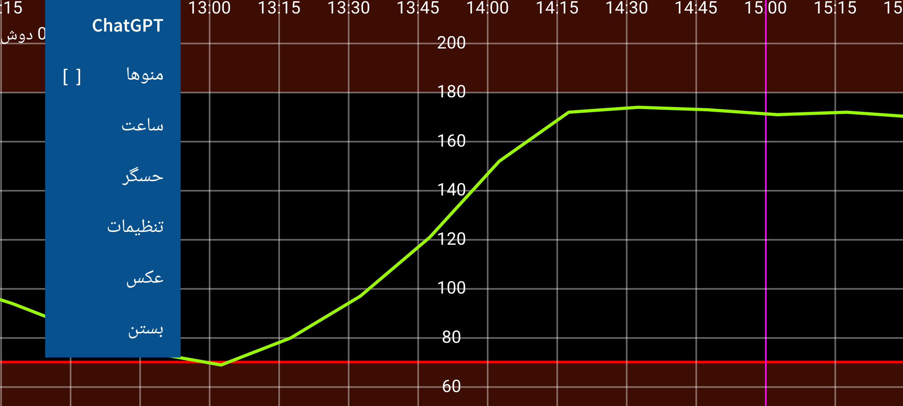
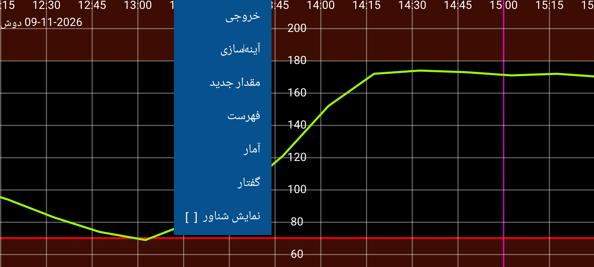
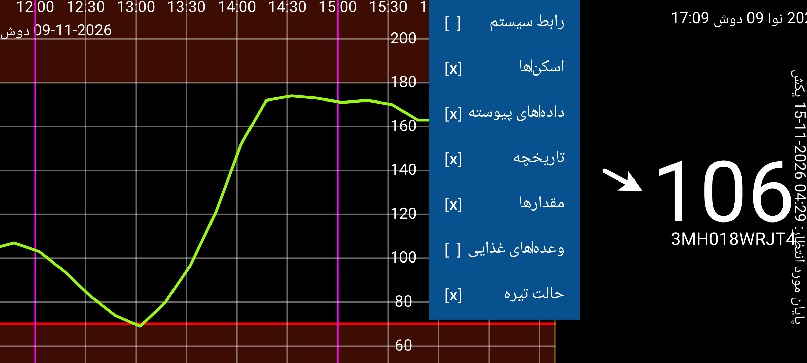
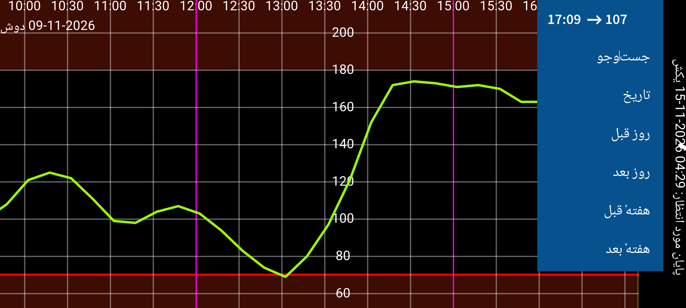

Juggluco برنامهای برای کمک به افراد مبتلا به دیابت در پایش و مدیریت گلوکز خون است. این برنامه میتواند حسگرهای FreeStyle Libre 0 و 2 را از طریق NFC اسکن کند و مقدارهای گلوکز را از طریق بلوتوث از حسگرهای FreeStyle Libre 2، 2+، 3 و 3+، Sibionics GS1Sb و GS3، Dexcom G7/ONE+، Accu-Chek SmartGuide، CareSens Air و Linx/Lumiflex/Aidex X دریافت کند. (Juggluco)
در نخستین اجرای برنامه، برای اسکن حسگر FreeStyle Libre 2 کافی است آن را به قسمت NFC تلفن نزدیک کنید. پس از آن، Juggluco تلاش میکند از طریق بلوتوث به حسگر Libre 2 متصل شود و بدون نیاز به اسکن مجدد، هر دقیقه یک مقدار گلوکز دریافت کند. برای انتقال حسگر FreeStyle Libre 3 یا 3+ که با برنامهٔ Libre 3 شرکت Abbott فعال شده است، باید در «تنظیمات ← تبادل داده ← LibreView» اطلاعات همان حساب LibreView را وارد کنید، «دریافت شناسهٔ حساب» را بزنید و پیش از اسکن، منتظر دریافت شناسه بمانید. انتقال حسگر Libre 3 که با دستگاه خوانشگر اختصاصی FreeStyle Libre 3 یا برنامهٔ آمریکایی Libre (برای Libre 2 و 3) راهاندازی شده باشد ممکن نیست. Juggluco میتواند حسگرهای نامبرده را نیز فعال کند، بهجز شاید Accu-Chek SmartGuide. (تنظیمات LibreView) (دریافت شناسهٔ حساب)
برای اتصال حسگرهای Sibionics GS1Sb، Dexcom G7/ONE+، Accu-Chek SmartGuide، CareSens Air و Linx/Lumiflex/Aidex X باید با گزینهٔ «منوی چپ ← عکس»، کد ماتریسی آنها را اسکن کنید. حسگر Dexcom G7/ONE+ از راه جفتسازی بلوتوث متصل میشود. در بیشتر تلفنها باید درخواست جفتسازی را سریع تأیید کنید؛ وگرنه ممکن است لازم باشد ۵ دقیقهٔ دیگر منتظر بمانید. هنگام انتظار صفحه را روشن نگه دارید. در Samsung Galaxy Watch 4 و 7 نیازی به تأیید جفتسازی نیست. حسگرهای منقضیشدهٔ Dexcom G7/ONE+ پس از توقف ثبت گلوکز نیز مدت زیادی از طریق بلوتوث قابل شناساییاند. برای جلوگیری از جفتشدن Juggluco با حسگر اشتباهی، حسگرهای قدیمی را خارج از برد بلوتوث نگه دارید (مثلاً در فاصلهٔ ۱۵ متری یا در قفس فارادی)، بهویژه اگر پین آنها با حسگر جدید یکسان باشد. برنامهها و دستگاههایی را که قبلاً به حسگر متصل بودهاند خاموش کنید یا برنامهها را بهاجبار متوقف یا حذف کنید. برای جفتسازی Accu-Chek SmartGuide باید پین را وارد کنید.
برای راهاندازی حسگر Sibionics GS3 با Juggluco، کد ماتریسی روی بسته را اسکن کنید یا خود حسگر را از طریق NFC بخوانید. سپس صفحهای برای واردکردن شناسه ظاهر میشود. اگر قبلاً حسگر را با برنامهٔ Sibionics GS3 استفاده کردهاید یا میخواهید بعداً با آن برنامه استفاده کنید، نشانی ایمیل و گذرواژهٔ حساب Sibionics GS3 خود را وارد کنید و شناسهٔ حساب را از سرور بگیرید. اگر حسگر جدید است و فقط میخواهید از Juggluco استفاده کنید، میتوانید عدد دلخواهی وارد کنید.
برای اطلاعات بیشتر دربارهٔ اتصال حسگرها، به راهنمای حسگرها مراجعه کنید.
برنامه چهار منو دارد که با لمس بخشی خالی از صفحه باز میشوند: لمس یکچهارم چپ صفحه، منوی چپ را باز میکند؛ لمس نیمهٔ چپ قسمت میانی، منوی دوم؛ لمس نیمهٔ راست قسمت میانی، منوی سوم؛ و لمس یکچهارم راست صفحه، منوی چهارم را باز میکند.
منوی ۴: پیمایش (راست)
۱۵:۱۰ ↗ ۹۳ |
تاریخ |
روز قبل |
روز بعد |
هفتهٔ قبل |
هفتهٔ بعد |
با کشیدن انگشت به چپ یا راست، نمودار را در زمان جابهجا میکنید. همین کار را میتوان با منوی پیمایش سمت راست انجام داد. «تاریخ» برای انتخاب روز و «جستوجو» برای پیداکردن مقدارهای گلوکز و مقدارهای ثبتشده است. نخستین گزینهٔ منوی راست، زمان کنونی را نشان میدهد؛ با انتخاب آن به انتهای راست نمودار، یعنی اکنون، میروید.
اگر در تنظیمات، «مقیاسبندی دستی ← گلوکز» فعال باشد، حرکت انگشت به بالا یا پایین در نیمهٔ بالایی صفحه، حد بالای نمودار و در نیمهٔ پایینی، حد پایین نمودار را تغییر میدهد. اگر «مقیاسبندی دستی ← زمان» فعال باشد، با نزدیککردن یا دورکردن دو انگشت میتوانید بازهٔ زمانی نمایان را تغییر دهید.
منوی ۳: نمایش
| رابط سیستم | [ ] |
| اسکنها | [x] |
| دادههای پیوسته | [x] |
| تاریخچه | [x] |
| مقدارها | [x] |
| وعدههای غذایی | [ ] |
| حالت تیره | [x] |
در منوی میانی سمت راست، گزینههای نمایش قرار دارند. نخستین گزینه، آخرین اسکن را نشان میدهد. علامت × کنار «اسکنها» یعنی دادههای حاصل از اسکن در نمودار نمایش داده میشوند. «اسکن» مقدار فعلی گلوکز است که با خواندن حسگر Libre 0 یا 2 از طریق NFC دریافت میکنید. اسکن همچنین مقدارهای «تاریخچه» را که هر ۱۵ دقیقه در ۸ ساعت اخیر در حسگر ذخیره شدهاند به تلفن منتقل میکند. نمایش این دادهها با گزینهٔ «تاریخچه» کنترل میشود. حسگر Libre 3 مقدارهای «تاریخچه» را هر ۵ دقیقه از طریق بلوتوث ارسال میکند. «دادههای پیوسته» به خوانشهایی گفته میشود که حسگرهای FreeStyle Libre 2 و 3 هر دقیقه از طریق بلوتوث به برنامه میفرستند.
میتوانید برای ثبت انسولین، کربوهیدرات و فعالیتها، عددهایی با برچسب دلخواه وارد کنید. این «مقدارها» در زمان و تاریخ مشخصشده، در ارتفاع ثابتی از نمودار گلوکز نمایش داده میشوند. با لمس نقطهای از نمودار یا مقدار ثبتشده، اطلاعات آن را میبینید. برای ویرایش مقدار ثبتشده، آن را لمس طولانی کنید؛ یا از «فهرست» در منوی میانی سمت چپ، مورد مربوط را باز کنید. گزینهٔ «مقدارها» نمایش این دادههای دستی را کنترل میکند. در «تنظیمات» میتوانید «برچسبها» را تعیین کنید. نام برچسب مرتبط بالای هر مقدار نمایش داده میشود. (برچسبها)
منوی ۲: میانی سمت چپ
| خروجی | |
| آینهسازی | |
| مقدار جدید | |
| فهرست | |
| آمار | |
| گفتار | |
| نمایش شناور | [ ] |
برای ثبت عددی جدید، در منوی میانی سمت چپ «مقدار جدید» را انتخاب کنید. گزینهٔ «خروجی» دادهها را در فایلی با قالب TSV (مقادیر جداشده با نویسهٔ Tab) ذخیره میکند. «آینهسازی» امکان ارسال دادهها از طریق IP/TCP به Juggluco روی دستگاهی دیگر را فراهم میکند تا همان اطلاعات را نمایش دهد. «فهرست» مقدارهای ثبتشده را نشان میدهد. پس از دریافت مقدار کافی از طریق بلوتوث، «آمار» درصد اندازهگیریها در محدودههای مختلف گلوکز، شاخص مدیریت گلوکز (GMI، شاخصی برای برآورد HbA1c)، تغییرپذیری گلوکز و «نمودار خلاصه» را نشان میدهد. نمودار خلاصه برای هر دقیقه از شبانهروز، گلوکزی را نشان میدهد که بهترتیب ۰، ۵، ۲۵، ۵۰، ۷۵، ۹۵ و ۱۰۰ درصد اندازهگیریها پایینتر از آن قرار میگیرند. با «گفتار»، Juggluco مقدارهای جدید گلوکز، عناصر لمسشدهٔ نمودار و پیامها را با صدا میخواند. «نمایش شناور» عدد گلوکز را روی سایر برنامهها نشان میدهد؛ اندازه و رنگ آن را میتوان در تنظیمات تغییر داد. (نمایش شناور)
منوی ۱: چپ
| ChatGPT | |
| منوها | [ ] |
| ساعت | |
| حسگر | |
| تنظیمات | |
| عکس | |
| بستن |
در منوی چپ به «تنظیمات» دسترسی دارید. در آنجا میتوانید واحد گلوکز را روی mmol/L یا mg/dL بگذارید، «برچسبها» را تعریف کنید و «هشدارهای گلوکز»، «یادآورهای دارو» و محدودههای نمایش را تنظیم کنید. «رابط سیستم» تعیین میکند کنترلهای Android و نوار وضعیت نشان داده شوند یا نه. در «ساعت» میتوانید ارسال دادهها به ساعتهای هوشمند مختلف را تنظیم کنید. «حسگر» وضعیت اتصال به حسگر را نشان میدهد. با «منوها» هر چهار منو بهصورت یکجا نمایش داده میشوند تا TalkBack بتواند آنها را بخواند. «بستن» برای خروج از Juggluco است. (برچسبها) (هشدارها) (یادآورها)